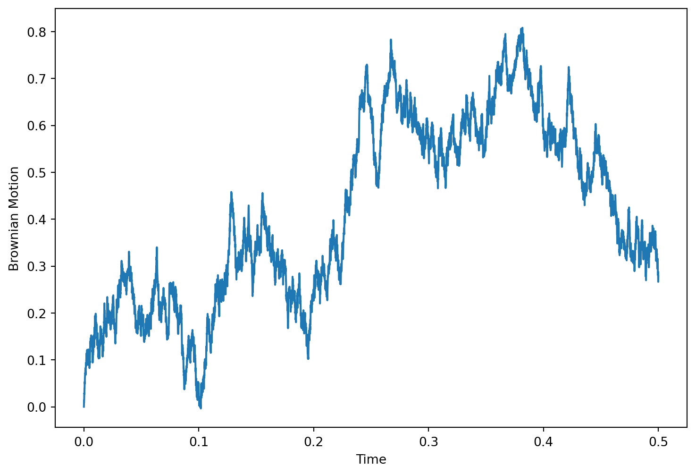
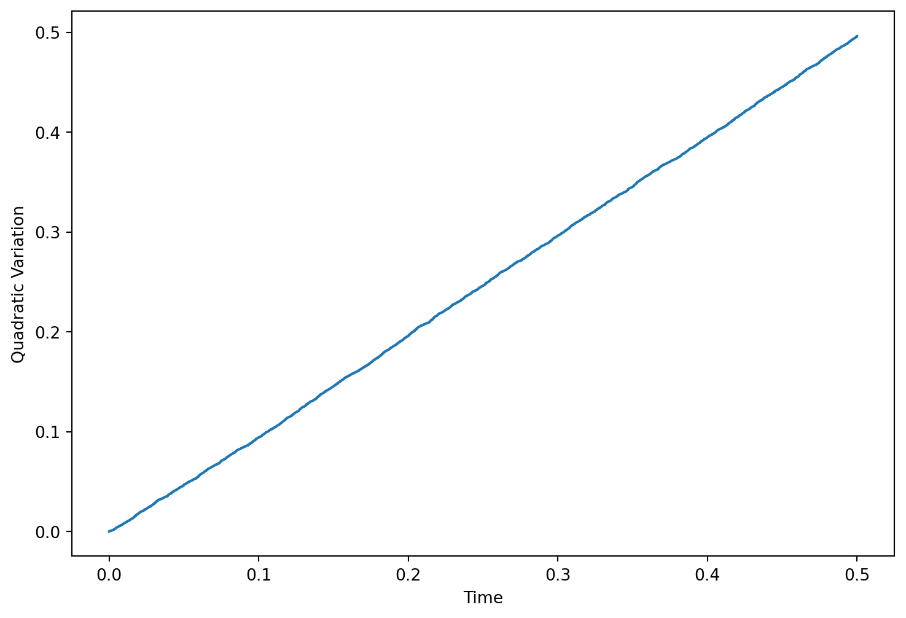
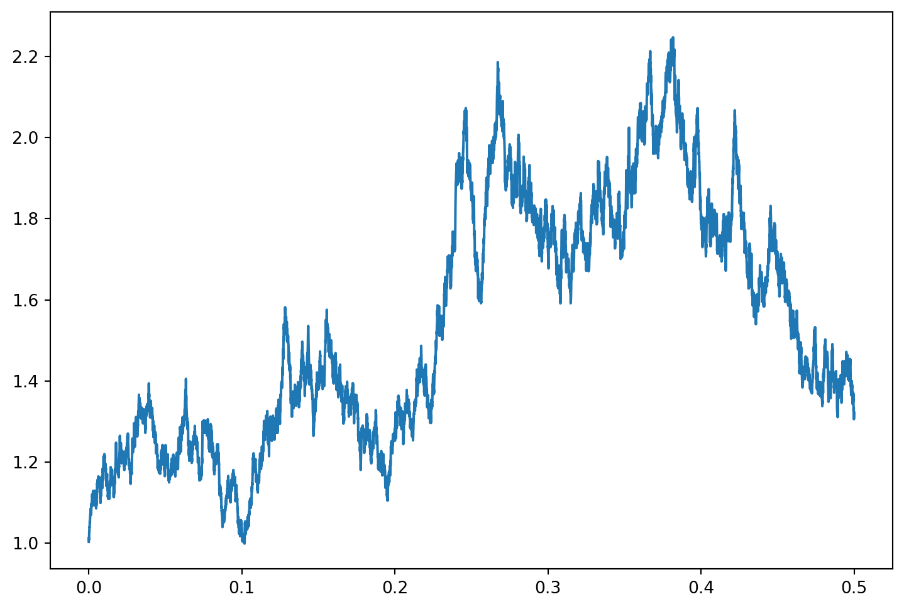
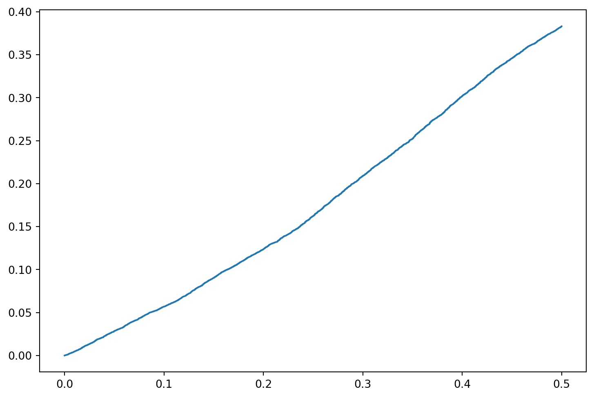
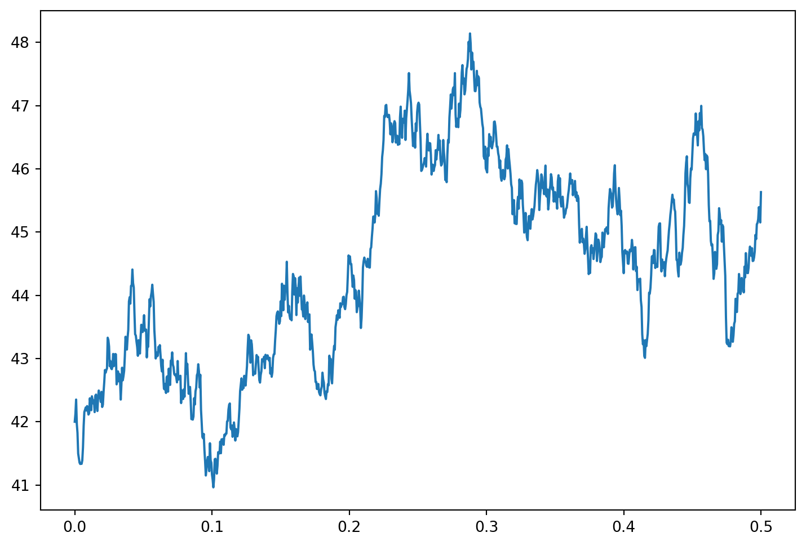

Our main point of departure is knowing how a given quantity evolves through time. For example, \(X(t)\) might denote how much wealth you have at time \(t\). Partition the interval \([0,T]\) into \(N\) intervals of length \(\Delta t = \frac{T}{N}\), in other words \[[0, \Delta t = \frac{T}{N}, 2 \Delta t, ..., (N-1) \Delta t, N \Delta t =T].\]
If you invest your wealth \(X((i-1)\Delta t)\) at a fixed rate of interest \(r \Delta t\) over a period of length \(\Delta t=\frac{T}{N}\), you will have \(X((i-1)\Delta t) (1+ r \Delta t)\) at the end of the period; the change of your wealth from \((i-1)\Delta t\) to \(t = i\Delta t\) is \[
\Delta X(t) = X(i \Delta t)-X((i-1) \Delta t)=(1+r \Delta t) X((i-1) \Delta t) - X(t)= r X(t) \Delta t.
\]
The limiting form of this equation is \[
X(t) = r X(t) dt ~~~\text{or} ~~~\frac{d X(t)}{dt} = r X(t)
\]
which is a differential equation. Notice this can also be written as a sum
\[X(N \Delta t) =X(0)+ \sum_{i=0}^N (X(i \Delta t)-X((i-1)\Delta t)) = X(0) + \sum_{i=0}^{N} r X((i-1)\Delta t) \Delta t ;
\]
in the limit we get an integral equation
\[X(t) = X(0) + \int_0^T r X(t) dt.\]
The solution is \(X(t) = X(0) e^{r T}\) which is easily verified by taking the derivative \(\frac{d}{dt}e^{r t} X(t) = r X(t)\) or by inserting the solution into the integral equation. This is also the limiting value of the discretely compunded interest as the number of compounding periods \(n\) goes to infinity:
This can be verified by taking the log of \(\left(1+r \frac{T}{N}\right)^{N}\) and using l’Hospital’s rule. Given the initial wealth, \(X(0)\) and the rate of change \(r X(t)\) (which, if the unit of account is dollars, is in units dollars / time), we can we solve for the value of our wealth at all times.
However, most investments involve risk. We might think that part of the return is more or less known while a portion of the investment is random or risky. Therefore we would like a model which can be written as \[ d X(t) = \mu X(t) dt + \text{`noise'} \times X(t). \]
It makes sense that the units of the noise should be in the unit of account (dollars) and it should have zero mean but it is not obvious how to make sense of a noisy change over an instant. In the next section we examine the most popular choice for this model, namely Brownian motion. Loosely speaking, we can take expectations to get
\[ d E[X(t)]= \mu E[X(t)] dt\]
which gives a solution
\[E[X(t)]=X(0) e^{\mu T}. \]
So we can think of this model as a known expected continuously compunded investment at a rate \(\mu\) plus a noisy return.
Historically, these deterministic mathematics trace back to Issac Newton who developed the classical laws of motion. The model of noise was developed by Ito to account for random disturbances, such as unpredictable wind gusts, to a deterministic model, for example, in a model predicting the position of a falling object.
This chapter has three objectives. The first is to introduce the concept of a Brownian motion. A Brownian motion is a random process (a variable that changes randomly over time) that evolves continuously in time and has the property that its change over any time period is normally distributed with mean zero and variance equal to the length of the time period. The mean zero feature means that a Brownian motion is a martingale. We will also give a different characterization (Levy’s theorem) emphasizing the quadratic variation process, which is a property of the paths (how the variable evolves over time, in a given state of the world) of the process.
The second objective is to explain Ito’s formula, which is the chain rule for stochastic calculus. In the Black-Scholes model, the stock price is assumed to satisfy \[\frac{\mathrm{d} S}{S}=\mu\,\mathrm{d} t+\sigma\,\mathrm{d} B\; ,\] where \(B\) is a Brownian motion. In the case that the stock pays no dividend, the rate of return is its price change \(\mathrm{d} S\) divided by the initial price \(S\), so the model states that the expected rate of return in each instant \(\mathrm{d} t\) is \(\mu\,\mathrm{d} t\) (of course, \(t\) denotes time, so \(\mathrm{d} t\) is the change in time). The variance of the rate of return depends on \(\sigma\). This model can be equivalently written in terms of the natural logarithm of \(S\), which we will write as \(\log S\). The above equation for the rate of return is equivalent to \[\mathrm{d}\,\log S = \left(\mu - \frac{1}{2}\sigma^2\right)\,\mathrm{d} t + \sigma\,\mathrm{d} B\; .\] We will explain this equivalence and other similar calculations that are useful for pricing derivatives.
The third objective is to explain how, when we change numeraires, as described in the previous chapter, we can calculate the expectation in the fundamental pricing Equation 2.29. The question is what effect does changing the numeraire (and hence the probability measure) have on the distribution of an asset price.
Everything in the remainder of the book is based on the mathematics presented in this chapter. For easy reference, the essential formulas have been highlighted in boxes.
3.2 Simulating a Brownian Motion
We begin with the fact that changes in the value of a Brownian motion are normally distributed with mean zero and variance equal to the length of the time period. Let \(B(t)\) denote the value of a Brownian motion at time \(t\). Then for any date \(u>t\), given the information at time \(t\), the random variable \(B(u) - B(t)\) is normally distributed with mean zero and variance equal to \(u-t\). Unless stated otherwise, our convention will be that a Brownian motion starts at \(B(0)=0\).
We can generate an approximate Brownian motion in Python. To do so, we take a small time period \(\Delta t\) and define the value at the end of the period to be the value of the Brownian motion at the beginning plus a normally distributed variable with mean 0 and variance \(\Delta t\). In the following procedure, we input the length \(T=0.5\) of the entire time period over which the Brownian motion is to be simulated. One input the is number \(n=10000\) of time periods of length \(\Delta t\) within the full interval \([0,T]\). The length \(\Delta t\) of each individual time period is then calculated as \(T/n\). The quality of the approximation of this simulation to a true Brownian motion will be always be improved by increasing the number \(n\). Plotting the output of the procedure creates a picture of what we call a path of the Brownian motion, which means that it shows the value taken at each time in one state of the world. The procedure generates \(m=2\) paths which can be interpreted as the values of the Brownian motion in another state of the world. In other words, the path of the Brownian motion is itself random, depending in this approximation on the numbers produced by Python’s random number generating function. The random number generator np.random.normal(loc = 0, scale = vol,size = (n,m)) is an algorithm which produces numbers which mimic \(n \times m\) normally distributed random variables with mean 0 (loc=0) and standard deviation \(\sqrt{\Delta t}\) (scale=vol). By setting the seed=1234 the generator is initialized and we will always get the same output whenever we run the code. The Brownian path is just the cumulative sum of \(n\) of the normal increments.
Code
import numpy as npimport matplotlib.pyplot as plt# number of subdivisionsn =10000# number of pathsm =2# last dateT =0.5# delta tdt = T/n# volatility is standard deviationvol = np.sqrt(dt)# seed for random generatorseed=1234# define a random generatornp.random.seed(seed)# generate "dB" for each date on each path distributed N(0,vol)inc = np.random.normal(loc =0, scale = vol,size = (n,m))Bt = np.zeros(shape = (n +1, m))# Brownian path starts at 0 and is cumulative sum of the dBBt[1:] = inc.cumsum(axis =0)# Could do previous step in a loopfor i inrange(1, n +1): Bt[i] = Bt[i -1] + inc[i -1]# plot one patht = np.array(range(0, n +1, 1)) * dtplt.figure(figsize=(9,6))plt.plot(t,Bt[:,0])plt.xlabel("Time")plt.ylabel("Brownian Motion")
Text(0, 0.5, 'Brownian Motion')
Simulated Brownian Motion

–>
3.3 Quadratic Variation
If we take a large number \(n\) of time steps in the simulation of the preceding section, we will see the distinctive characteristic of a Brownian motion: it jiggles rapidly, moving up and down in a very erratic way. The name Brownian motion derives from the botanist Robert Brown’s observations of the erratic behavior of particles suspended in a fluid. This has long been thought to be a reasonable model for the behavior of a stock price.
The plot of other functions with which we may be familiar will be much smoother. This is captured in the concept of quadratic variation.
Consider a discrete partition \[0=t_0 < t_1 < t_2 < \cdots < t_N=T\] of the time interval \([0,T]\). Let \(B\) be a Brownian motion and calculate the sum of squared changes \[\sum_{i=1}^N [\Delta B_{t_i}]^2\; ,\] where \(\Delta B_{t_i}\) denotes the change \(B_{t_i}-B(t_{i-1}).\) If we consider finer partitions with the length of each time interval \(t_i-t_{i-1}\) going to zero, the limit of the sum is called the quadratic variation of the process. For a Brownian motion, the quadratic variation over an interval \([0,T]\) is equal to \(T\) with probability one. Here is a plot of the quadratic variation. For large values of \(n\), it is equal to \(t\).
Code
# quadratic variationQ = np.zeros(shape = (n, m))# Generate dB^2Q = (Bt[1:n +1] - Bt[0:n])**2# Quadratic variation is the cumulative sum of dB^2QV = np.zeros(shape = (n +1, m))QV[1:] = Q.cumsum(axis =0)plt.figure(figsize=(9,6))plt.plot(t,QV[:,0])plt.xlabel("Time")plt.ylabel("Quadratic Variation")
Text(0, 0.5, 'Quadratic Variation')
Quadratic Variation

The functions with which we are normally familiar are continuously differentiable. If \(X\) is a continuously differentiable function of time (in each state of the world), then the quadratic variation of \(X\) will be zero. A simple example is a linear function: \(X(t) = at\) for some constant \(a\). Then, taking \(t_i-t_{i-1} = \Delta t = T/N\) for each \(i\), the sum of squared changes is \[\sum_{i=1}^N [\Delta X_{t_i}]^2 = \sum_{i=1}^N [a\,\Delta t]^2 = Na^2 (\Delta t)^2 = Na^2 \left(\frac{T}{N}\right)^2 = \frac{a^2T^2}{N} \rightarrow 0\] as \(N \rightarrow \infty\). Essentially the same argument shows that the quadratic variation of any continuously differentiable function is zero, because such a function is approximately linear at each point. Below is a plot of the quadratic variation for the function \(X(t)=t\). Look carefully at the scale of the y-axis
Thus, the jiggling of a Brownian motion, which leads to the nonzero quadratic variation, is quite unusual. To explain exactly how unusual it is, it is helpful to introduce the concept of total variation, which is defined in the same way as quadratic variation but with the squared changes \([\Delta B_{t_i}]^2\) replaced by the absolute value of the changes \(|\Delta B_{t_i}|.\) If the quadratic variation of a continuous function is nonzero, then its total variation is necessarily infinite, so each path of a Brownian motion has infinite total variation (with probability one). It was mentioned above that, with a large number of time steps in the simulation of the preceding section, one could see the distinctive jiggling property of a Brownian motion. This is not quite right. Any plot drawn by a pencil (or a laser printer, for that matter) must have finite total variation, because the total variation is the total distance traveled by the pencil. Hence, no matter how many time steps one uses, one will never create a continuous plot with the nonzero quadratic variation (and infinite total variation) that a Brownian path has. Another way to understand this is to consider focusing on a small segment of a plot and viewing it with a magnifying glass. If the segment is small enough, and excluding the finite number of kinks that a pencil can draw in the plot of a function, it will look approximately like a straight line under the magnifying glass (with slope equal to the derivative of the function). However, if one could view a segment of a path of a true Brownian motion under a magnifying glass, it would look much the same as the entire picture does to the naked eye—no matter how small the segment, one would still see the characteristic jiggling.
To better visualize the convergence of the quadratic for a handfull of simulated paths of a standard Brownian motion, we encourage readers to interact with the plot below.
Figure 3.1: Convergence of quadratic variation for a standard Brownian motion
One may well question why we should be interested in this curious mathematical object. The reason is that asset pricing inherently involves martingales (variables that evolve randomly over time in such a way that their expected changes are always zero), as our fundamental pricing Equation 2.29 establishes. Furthermore, continuous processes (variables whose paths are continuous functions of time) are much more tractable mathematically than are processes that can jump at some instants. More importantly, it is possible in a mathematical model with continuous processes to define perfect hedges much more readily than it is in a model involving jump processes. So, we are led to a study of continuous martingales. An important fact is that any non-constant continuous martingale must have infinite total variation! So, the normal functions with which we are familiar are left behind once we enter the study of continuous martingales.
There remains perhaps the question of why we focus on Brownian motion within the world of continuous martingales. The answer here is that any continuous martingale is really just a transformation of a Brownian motion. This is a consequence of the following important fact, which is known as Levy’s theorem:
Tip
A continuous martingale is a Brownian motion if and only if its quadratic variation over each interval \([0,T]\) equals \(T\).
Thus, among continuous martingales, a Brownian motion is defined by the condition that the quadratic variation over each interval \([0,T]\) is equal to \(T\). This is really just a normalization. A different continuous martingale may have a different quadratic variation, but it can be converted to a Brownian motion just by deforming the time scale. Furthermore, many continuous martingales can be constructed as stochastic integrals with respect to a Brownian motion. We take up this topic in the next section.
3.4 Ito Processes
An Ito process is a variable \(X\) that changes over time as \[
\mathrm{d} X(t) = \mu(t)\,\mathrm{d} t+\sigma(t)\,\mathrm{d} B(t)\;,
\qquad(3.1)\]
where \(B\) is a Brownian motion, and \(\mu\) and \(\sigma\) can also be random processes. Some regularity conditions are needed on \(\mu\) and \(\sigma\) which we will omit, except for noting that \(\mu(t)\) and \(\sigma(t)\) should be known at time \(t\). In particular, constant \(\mu\) and \(\sigma\) are certainly acceptable. When we add the changes over time, we get \[X(t)=X(0) + \int_0^T\mu(t)\,\mathrm{d} t + \int_0^T\sigma(t)\,\mathrm{d} B(t)\] for any \(T>0\). There are other types of random processes, in particular, processes that can jump, but we will not consider them in this book.
We will not formally define the integral \(\int_0^T \sigma(t)\,\mathrm{d} B(t)\), but it should be understood as being approximately equal to a discrete sum of the form \[\sum_{i=1}^N \sigma(t_{i-1})\,\Delta B_{t_i}\; ,\] where \(0=t_0 < \cdots t_N=T\) and the time periods \(t_i-t_{i-1}\) are small. Given that we can simulate the changes \(\Delta B_{t_i}\) as random normals, we can approximately simulate the random variable \(\int_0^T \sigma(t)\,\mathrm{d} B(t)\) and hence we can approximately simulate \(X(t)\).
An Ito process evolves continuously over time. We interpret \(\mu(t)\,\mathrm{d} t\) as the expected change in \(X\) in an instant \(\mathrm{d} t\). The quantity \(\mu(t)\) is also called the drift of the process \(X\) at time \(t\). The coefficient \(\sigma(t)\) is called the diffusion coefficient of \(X\) at time \(t\).
If \(\mu\) and \(\sigma\) are constant, it is standard to refer to an Ito process \(X\) as a \((\mu,\sigma)\)–Brownian motion. In this case we have \[X(t)= \mu t + \sigma B(t)\]
Of course, it is not a martingale when \(\mu\neq 0\). For example, when \(\mu>0\), \(X\) tends to increase over time. However, it has the jiggling property of a Brownian motion, scaled by the diffusion coefficient \(\sigma\).
A very important fact is that an Ito process such as Equation 3.1 can be a martingale only if \(\mu=0\). This should seem sensible, because \(\mu\,\mathrm{d} t\) is the expected change in \(X\), and a process is a martingale only if its expected change is zero.1 This observation plays a fundamental role in deriving asset pricing formulas, as we will begin to see in Section 3.10. Conversely, if \(\mu=0\) and \[
E \left[\int_0^T \sigma^2(t)\,\mathrm{d} t\right] < \infty
\qquad(3.2)\]
for each \(T\),
then the Ito process is a continuous martingale and the variance of its date–\(T\) value, calculated with the information available at date 0, is: \[\mathrm{var}[X(t)] = E \left[\int_0^T \sigma^2(t)\,\mathrm{d} t\right]\; .\]
Whether \(\mu\) is zero or not, and independently of the assumption Equation 3.2, the quadratic variation of the Ito process \(X\) is \[
\lim_{N \rightarrow \infty} \sum_{i=1}^N[\Delta X_{t_i}]^2 = \int_0^T \sigma^2(t)\,\mathrm{d} t
\qquad(3.3)\]
with probability one. Thus we obtain (when \(\mu=0\) and Equation 3.2 holds) a continuous martingale with a different quadratic variation than a Brownian motion via the diffusion function \(\sigma\). In fact, when Equation 3.2 holds, a somewhat more precise definition of the stochastic integral is the (unique) martingale with quadratic variation given by Equation 3.3.
To compute the quadratic variation of an Ito process, we use the following simple and important rules (for the sake of brevity, we drop the \((t)\) notation from \(B(t)\) here and sometimes later):
Tip
\[
(\mathrm{d} t)^2 = 0\;,
\qquad(3.4)\]
\[
(\mathrm{d} t)(\mathrm{d} B) =0\;,
\qquad(3.5)\]
We apply these rules to compute the quadratic variation of \(X\) as follows:
Tip
If \(\mathrm{d} X = \mu\,\mathrm{d} t + \sigma\,\mathrm{d} B\) for a Brownian motion \(B\), then \[\begin{align*}
(\mathrm{d} X)^2 &= (\mu\,\mathrm{d} t+\sigma\,\mathrm{d} B)^2\\
&= \mu^2(\mathrm{d} t)^2 + 2\mu\sigma(\mathrm{d} t)(\mathrm{d} B) + \sigma^2(\mathrm{d} B)^2\\
&= 0 + 0 + \sigma^2\,\mathrm{d} t\;.
\end{align*}\]
We integrate this from 0 to \(T\) to obtain the quadratic variation Equation 3.3 over that time period:2\[
\int_0^T (\mathrm{d} X(t))^2 = \int_0^T \sigma^2(t)\,\mathrm{d} t\;.
\qquad(3.7)\]
3.5 Ito’s Formula
First we recall some facts of the ordinary calculus. If \(y=g(x)\) and \(x = f(t)\) with \(f\) and \(g\) being continuously differentiable functions, then \[\frac{\mathrm{d} y}{\mathrm{d} t} = \frac{\mathrm{d} y}{\mathrm{d} x}\times \frac{\mathrm{d} x}{\mathrm{d} t} = g'(x(t))f'(t)\; .\] Over a time period \([0,T]\), this implies that \[y(t) = y(0) + \int_0^T \frac{\mathrm{d} y}{\mathrm{d} t}\,\mathrm{d} t = y(0) + \int_0^T g'(x(t))f'(t)\,\mathrm{d} t\; .\] Substituting \(\mathrm{d} x(t) = f'(t)\,\mathrm{d} t\), we can also write this as \[
y(t) = y(0) + \int_0^T g'(x(t))\,\mathrm{d} x(t)\;.
\qquad(3.8)\]
We can contrast Equation 3.8 with a special case of Ito’s formula for the calculus of Ito processes (the more general formula will be discussed in the next section). If \(B\) is a Brownian motion and \(Y = g(B)\) for a twice-continuously differentiable function \(g\), then \[
Y(t) = Y(0) + \int_0^T g'(B(t))\,\mathrm{d} B(t) + \frac{1}{2}\int_0^T g''(B(t))\,\mathrm{d} t\;.
\qquad(3.9)\]
Thus, relative to the ordinary calculus, Ito’s formula has an extra term involving the second derivative \(g''\). We can write Equation 3.9 in differential form as \[dY(t) = \frac{1}{2}g''(B(t))\,\mathrm{d} t + g'(B(t))\,\mathrm{d} B(t).\] Thus, \(Y=g(B)\) is an Ito process with drift \(g''(B(t))/2\) and diffusion coefficient \(g'(B(t))\).
To gain some intuition for the extra term in Ito’s formula, we return to the ordinary calculus. Given dates \(t<u\), the derivative defines a linear approximation of the change in \(y\) over this time period; i.e., setting \(\Delta x = x(u)-x(t)\) and \(\Delta y = y(u) - y(t)\), we have the approximation \[\Delta y \approx g'(x(t)) \,\Delta x\; .\] A better approximation is given by the second-order Taylor series expansion \[\Delta y \approx g'(x(t))\,\Delta x + \frac{1}{2} g''(x(t))\,[\Delta x]^2\; .\] An interpretation of Equation 3.8 is that the linear approximation works perfectly for infinitesimal time periods \(\mathrm{d} t\), because we can compute the change in \(y\) over the time period \([0,T]\) by summing up the infinitesimal changes \(g'(x(t))\,\mathrm{d} x(t)\). In other words, the second-order term \(\frac{1}{2} g''(x(t))\,[\Delta x]^2\) vanishes when we consider very small time periods.
The second-order Taylor series expansion in the case of \(Y=g(B)\) is \[\Delta Y \approx g'(B(t))\,\Delta B + \frac{1}{2} g''(B(t))\,[\Delta B]^2\; .\] For example, given a partition \(0=t_0 < t_1 < \cdots < t_N=T\) of the time interval \([0,T]\), we have, with the same notation we have used earlier,
If we make the time intervals \(t_i-t_{i-1}\) shorter, letting \(N \rightarrow \infty\), we cannot expect that the extra term here will disappear, leading to the result Equation 3.8 of the ordinary calculus, because we know that \[\lim_{N \rightarrow \infty} \sum_{i=1}^N [\Delta B_{t_i}]^2 = T\; ,\] whereas for the continuously differentiable function \(x(t) = f(t)\), the same limit is zero. In fact it seems sensible to interpret the limit of \([\Delta B]^2\) as \((\mathrm{d} B)^2 =\mathrm{d} t\). This is perfectly consistent with Ito’s formula: if we take the limit in Equation 3.10, replacing the limit of \([\Delta B_{t_i}]^2\) with \((\mathrm{d} B)^2 = \mathrm{d} t\), we obtain Equation 3.9.
The code below defines a function \(g(x)=e^{x}\) (\(g'(x)=e^x\) and \(g''(x) = e^x\)) and simulates the value \(e^{B(t)}\) in two ways. The first way is to simulate the Ito expansion \[e^{B(t)}=1 + \int_0^t e^{B_s} d B_s + \frac{1}{2}\int_0^t e^{B_s} ds\] using the discretization \[\Delta e^{B(t)}= e^{B(t)} \Delta B(t) + \frac{1}{2} e^{B(t)} \Delta t \]
::: {#cell-Simulated Ito Formula .cell execution_count=4}
Code
# Define a function and its first and second derivativeG =lambda x: np.exp(x)DG =lambda x: np.exp(x)DDG =lambda x: np.exp(x)# Build G'(x)dBGdB = np.zeros(shape = (n, m))GdB[0] = np.repeat(DG(0), m) * inc[0]GdB[1:] = DG(Bt[0:n -1]) * inc[1:]SI = np.zeros(shape = (n, m))# Stochastic Integral is cumulative sum of G'(B)dB plus initialSI = GdB.cumsum(axis =0) +0.5* (DDG(Bt[0:n])*Q).cumsum(axis =0) + G(0)# Compare Ito's Lemma plt.figure(figsize=(9,6))plt.plot(t[0:n], SI[:,0])
Simulated Ito Formula

:::
Below is the exact simulated solution \(e^{B(t)}\). It is almost impossible to see a difference.
Below we plot the \(\int_0^t \frac{1}{2} g''(B_s) ds\) term. Without this term the two plots above will not match.
Code
# Correction term in Ito formulaQVV = np.zeros(shape = (n, m))QVV =0.5*(DDG(Bt[0:n]) * Q).cumsum(axis =0)plt.figure(figsize=(9,6))plt.plot(t[0:n], QVV[:,0])
Second Derivative Term in Ito’s Formula

To see the accuracy of Ito’s approximation over different amounts of subdivisions, as well as the impact of the second derivative term \(\int_0^t \fra{1}{2}g''(B_s)ds\), we encourage readers to interact with the plot below.
Figure 3.2: Accuracy of Ito’s approximation
3.6 Multiple Ito Processes
Now consider two Ito processes
\[
\mathrm{d} X(t) = \mu_x(t)\,\mathrm{d} t + \sigma_x(t)\,\mathrm{d} B_x(t)\;,
\qquad(3.11)\]
\[
\mathrm{d} Y(t) = \mu_y(t)\,\mathrm{d} t + \sigma_y(t)\,\mathrm{d} B_y(t)\;,
\qquad(3.12)\]
where \(B_x\) and \(B_y\) can be different Brownian motions. The relation between the two Brownian motions is determined by their covariance or correlation. Given dates \(t<u\), we know that both changes \(B_x(u)-B_x(t)\) and \(B_y(u)-B_y(t)\) are normally distributed with mean 0 and variance equal to \(u-t\). There will exist a (possibly random) process \(\rho\) such that the covariance of these two normally distributed random variables, given the information at date \(t\), is \[E(t) \left[\int(t)^u \rho(s)\,\mathrm{d} s\right]\; .\] The process \(\rho\) is called the correlation coefficient of the two Brownian motions, because when it is constant the correlation of the changes \(B_x(u)-B_x(t)\) and \(B_y(u)-B_y(t)\) is \[\frac{\text{covariance}}{\text{product of standard deviations}} = \frac{\int(t)^u \rho \,\mathrm{d} s}{\sqrt{u-t} \sqrt{u-t}} = \frac{(u-t)\rho}{u-t} = \rho\; .\] Moreover, given increasingly fine partitions \(0=t_0 < \cdots < t_N=T\) of an interval \([0,T]\) as before, we will have \[\sum_{i=1}^N \Delta B_x_{t_i} \times \Delta B_y_{t_i} \rightarrow \int_0^T \rho(t)\,\mathrm{d} t\] as \(N \rightarrow \infty\), with probability one.
We know that \[\sum _{i=1}^N [\Delta X_{t_i}]^2 \rightarrow \int_0^T \sigma_x^2(t)\,\mathrm{d} t \quad \text{and}\quad \sum _{i=1}^N [\Delta Y_{t_i}]^2 \rightarrow \int_0^T\sigma_y^2(t)\,\mathrm{d} t\;.
\qquad(3.13)\]
Furthermore, it can be shown that the sum of products satisfies \[
\sum_{i=1}^N \Delta X_{t_i} \times \Delta Y_{t_i} \rightarrow \int_0^T \sigma_x(t)\sigma_y(t)\rho(t)\,\mathrm{d} t\;.
\qquad(3.14)\]
Tip
By adding the rule \[
(\mathrm{d} B_x)(\mathrm{d} B_y) = \rho\,\mathrm{d} t
\qquad(3.15)\] to the rules Equation 3.4–Equation 3.6, we can compute the limit in Equation 3.14 as
The most general case of Ito’s formula that we will need is for a function \(Z(t) = g(t, X(t), Y(t))\) where \(X\) and \(Y\) are Ito processes as in Equation 3.11 - Equation 3.12. In this case, Ito’s formula is3
In this equation, we apply the rules Equation 3.4–Equation 3.15 to compute \[\begin{align*}
(\mathrm{d} X(t))^2&= \sigma_x^2(t)\,\mathrm{d} t\; ,\\
(\mathrm{d} Y(t))^2 &= \sigma_y^2(t)\,\mathrm{d} t\; ,\\
(\mathrm{d} X(t))( \mathrm{d} Y(t)) &= \sigma_x(t)\sigma_y(t)\rho(t)\,\mathrm{d} t\;.
\end{align*}\] Ito’s Equation 3.17 appears a bit simpler (and easier to remember) if we write it in differential form.” We have:
Tip
If \(Z(t) = g(t, X(t), Y(t))\) where \(X\) and \(Y\) are Ito processes as in Equation 3.11 - Equation 3.12, then
\[
\mathrm{d} Z = \frac{\partial g}{\partial t}\,\mathrm{d} t + \frac{\partial g}{\partial x}\,\mathrm{d} X + \frac{\partial g}{\partial y}\,\mathrm{d} Y + \frac{1}{2} \frac{\partial^2 g}{\partial x^2}\,(\mathrm{d} X)^2 + \frac{1}{2} \frac{\partial^2 g}{\partial y^2}\,(\mathrm{d} Y)^2
\]\[
+ \frac{\partial^2 g}{\partial x\partial y}\,(\mathrm{d} X)(\mathrm{d} Y)\;.
\qquad(3.18)\]
3.7 Examples of Ito’s Formula
The following are the applications of Ito’s formula that will be used most frequently in the book. They follow from the boxed formula at the end of the previous section by taking \(g(x,y)=xy\) or \(g(x,y)=y/x\) or \(g(x)=e^x\) or \(g(x) = \log x\).
Tip
Products.; If \(Z=XY\), then \(\mathrm{d} Z=X\,\mathrm{d} Y+Y\,\mathrm{d} X + (\mathrm{d} X)(\mathrm{d} Y)\). We can write this as \[
\frac{\mathrm{d} Z}{Z}=\frac{\mathrm{d} X}{X} + \frac{\mathrm{d} Y}{Y} + \left(\frac{\mathrm{d} X}{X}\right)\left(\frac{\mathrm{d} Y}{Y}\right)\;.
\qquad(3.19)\]
Tip
Ratios.; If \(Z=Y/X\), then \[\frac{\mathrm{d} Z}{Z} = \frac{\mathrm{d} Y}{Y} -\frac{\mathrm{d} X}{X} - \left(\frac{\mathrm{d} Y}{Y}\right)\left(\frac{\mathrm{d} X}{X}\right) + \left(\frac{\mathrm{d} X}{X}\right)^2\;.
\qquad(3.20)\]
Tip
Exponentials.; If \(Z=\mathrm{e}^X\), then \[\frac{\mathrm{d} Z}{Z}=\mathrm{d} X + \frac{(\mathrm{d} X)^2}{2}\;.
\qquad(3.21)\]
Tip
Logarithms.; If \(Z=\log X\), then \[
\mathrm{d} Z=\frac{\mathrm{d} X}{X} - \frac{1}{2}\left(\frac{\mathrm{d} X}{X}\right)^2\;.
\qquad(3.22)\]
Tip
Compounding/Discounting. Let \[Y(t) =\exp\left(\int_0^t q(s)\,\mathrm{d} s\right)\] for some (possibly random) process \(q\) and define \(Z=XY\) for any Ito process \(X\). The usual calculus gives us \(\mathrm{d} Y(t)=q(t)Y(t)\,\mathrm{d} t\), and the product rule above implies \[
\frac{\mathrm{d} Z}{Z}=q\,\mathrm{d} t + \frac{\mathrm{d} X}{X}\;.
\qquad(3.23)\]
This is the same as in the usual calculus.
3.8 Reinvesting Dividends
Frequently, we will assume that the asset underlying a derivative security pays a constant dividend yield, which we will denote by \(q\). This means, for an asset with price \(S(t)\), that the dividend in an instant \(\mathrm{d} t\) is \(q S(t)\,\mathrm{d} t\). If the dividends are reinvested in new shares, the number of shares will grow exponentially at rate \(q\). To see this, consider the portfolio starting with a single share of the asset and reinvesting dividends until some date \(T\). Let \(X(t)\) denote the number of shares resulting from this strategy at any time \(t\leq T\). Then the dividend received at date \(t\) is \(q S(t)X(t)\,\mathrm{d} t\), which can be used to purchase \(q X(t)\,\mathrm{d} t\) new shares. This implies that \(\mathrm{d} X(t)=q X(t)\,\mathrm{d} t\), or \(\mathrm{d} X(t)/\mathrm{d} t = q X(t)\), and it is easy to check (and very well known) that this equation is solved by \(X(t)=\mathrm{e}^{q t}X(0)\). In our case, with \(X(0)=1\), we have \(X(t)=\mathrm{e}^{q t}\).
The dollar value of the trading strategy just described will be \(X(t)S(t) = \mathrm{e}^{q t}S(t)\). Denote this by \(V(t)\). This is the value of a non-dividend-paying portfolio, because all dividends are reinvested. From the Compounding/Discounting example in Section 3.7, we know that \[
\frac{\mathrm{d} V}{V} = q\,\mathrm{d} t + \frac{\mathrm{d} S}{S}\;.
\qquad(3.24)\]
This means that the rate of return on the portfolio is the dividend yield \(q\,\mathrm{d} t\) plus the return \(\mathrm{d} S/S\) due to capital gains.
3.9 Geometric Brownian Motion
A random variable is lognormally distributed if it can be written as \(\tilde{y}= e^{\tilde{x}}\) where \(\tilde{x}\) is distributed according to a normal distribution with mean \(m\) and standard deviation \(s\). The expected value of \(\tilde{y}\) is given by \(E[\tilde{y}] = e^{m+\frac{s^2}{2}}\).
Tip
Lognormal Random Variable.; If \(\tilde{x}\) is normally distributed with mean \(m\) and standard deviation \(s\), then \(e^{\tilde{x}}\) is lognormally distributed and \[E[e^{\tilde{x}}]=e^{m + \frac{1}{2} s^2};.
\qquad(3.25)\]
An important stochastic process is the Geometric Brownian Motion given by \[
S(t)=S(0)\exp\left(\mu t- \sigma^2 t/2 + \sigma B(t)\right)
\qquad(3.26)\]
for constants \(\mu\) and \(\sigma\), where \(B\) is a Brownian motion. Note that for each time \(t\), geometric Brownian motion is a lognormal random variable. Using the product rule and the rule for exponentials, we obtain \[
\frac{\mathrm{d} S}{S} = \mu\,\mathrm{d} t+\sigma\,\mathrm{d} B\;.
\qquad(3.27)\]
The process \(S\) is called a geometric Brownian motion. In keeping with the discussion of Section 3.4, we interpret Equation 3.27 as stating that \(\mu\,\mathrm{d} t\) is the expected rate of change of \(S\) and \(\sigma^2\,\mathrm{d} t\) is the variance of the rate of change in an instant \(\mathrm{d} t\). We call \(\mu\) the drift and \(\sigma\) the volatility. The geometric Brownian motion will grow at the average rate of \(\mu\), in the sense that \(E[S(t)] = \mathrm{e}^{\mu t}S(0)\); one way to verify this uses the formula for the mean of a lognormal random variable.
Taking the natural logarithm of Equation 3.26 gives an equivalent form of the solution: \[
\log S(t)= \log S(0)+\left(\mu -\frac{1}{2}\sigma^2\right)t + \sigma B(t)\;.
\qquad(3.28)\] This shows that \(\log S(t) - \log S(0)\) is a \((\mu-\sigma^2/2,\sigma)\)–Brownian motion. Given information at time \(t\), the logarithm of \(S(u)\) for \(u>t\) is normally distributed with mean \((u-t)(\mu-\sigma^2/2)\) and variance \((u-t)\sigma^2\). Because \(S\) is the exponential of its logarithm, \(S\) can never be negative. For this reason, a geometric Brownian motion is a better model for stock prices than is a Brownian motion.
The differential of Equation 3.28 is \[
\mathrm{d} \log S(t) = \left(\mu -\frac{1}{2}\sigma^2\right)\,\mathrm{d} t+ \sigma\,\mathrm{d} B(t)\;.
\qquad(3.29)\]
We conclude:
Tip
The equation \[\frac{\mathrm{d} S}{S} = \mu\,\mathrm{d} t+\sigma\,\mathrm{d} B\] is equivalent to the equation \[\mathrm{d} \log S(t) = \left(\mu -\frac{1}{2}\sigma^2\right)\,\mathrm{d} t+ \sigma\,\mathrm{d} B(t)\; .\] The solution of both equations is Equation 3.26 or the equivalent Equation 3.28.
Over a discrete time interval \(\Delta t\), Equation 3.29 implies that the change in the logarithm of \(S\) is \[
\Delta \log S = \left(\mu -\frac{1}{2}\sigma^2\right)\Delta t+ \sigma\,\Delta B\;.
\qquad(3.30)\]
If \(S\) is the price of a non-dividend-paying asset, then over the time period \(t_{i-1}\) to \(t_i\), with \(t_i-t_{i-1}=\Delta t\), we have \[
\Delta \log S = r_i\,\Delta t\;,
\qquad(3.31)\]
where \(r_i\) is the continuously compounded annualized rate of return during the period \(\Delta t\). This follows from the definition of the continuously compounded rate of return as the constant rate over the time period \(\Delta t\) that would cause \(S\) to grow (or fall) from \(S(t_{i-1})\) to \(S_{t_i}\). To be precise, \(r_i\) is defined by \[\frac{S_{t_i}}{S(t_{i-1})} = \mathrm{e}^{r_i\Delta t}\; ,\] which is equivalent to Equation 3.31. Thus, the geometric Brownian motion model Equation 3.27 implies that the continuously compounded annualized rate of return over a period of length \(\Delta t\) is given by \[r_i = \mu -\frac{1}{2}\sigma^2+ \frac{\sigma\Delta B}{\Delta t}\; .\] This means that \(r_i\) is normally distributed with mean \(\mu-\sigma^2/2\) and variance \(\sigma^2/\Delta t\). Given historical data on the rates of return, the parameters \(\mu\) and \(\sigma\) can be estimated by standard methods (see Chapter 8).
We can simulate a path of \(S\) by simulating the changes \(\Delta \log S\). The random variable \(\sigma \Delta B\) in Equation 3.30 has a normal distribution with zero mean and variance equal to \(\sigma^2\Delta t\). We simulate it as \(\sigma\sqrt{\Delta t}\) multiplied by a standard normal. The code below simulates \(n=10000\) paths with \(m=1000\) time steps. There are some features of the simulation which will prove useful later. The drift \(\mu\) is labelled the interest rate \(r=0.1\). Other parameters are \(\sigma = 0.2\), and \(T=0.5\). The drift of the log stock price is labelled \(drift=r-\frac{\sigma^2}{2}\). The plot output is one of the simulated sample paths. In practice, if we are only interested in the terminal value of the stock price we would use many fewer subdivisions, \(n=1\). Given a simulated mean zero normal random variable, \(z\), changing the sign to \(-z\) is also a simulated normal random variable with zero mean and the same standard deviation. As a result, we have two simulations for the stock price labelled \(St\) and \(St1\), but we only plot one sample path for \(St\).
Code
# Simulate Geometric Brownian Motionimport numpy as npimport matplotlib.pyplot as plt# number of pathsn =10000#number of divisionsm =1000# Interest rate (We set the drift equal to the interest rate)r =0.1# Volatilitysig =0.2# Initial Stock PriceS0 =42# MaturityT =0.5# Delta tdt = T/m# Driftdrift = (r-0.5*sig**2)# Volatilityvol = sig * np.sqrt(dt)t = np.array(range(0,m +1,1)) * dt# seed for random generatorseed=2020# define a random generatornp.random.seed(seed)inc = np.zeros(shape = (m +1, n))inc[1:] = np.transpose(np.random.normal(loc =0, scale = vol,size = (n,m)))St = np.zeros(shape = (m +1, n))St = S0 * np.exp(np.cumsum(inc,axis=0) + (drift * t[0:m +1])[:,None])St1 = S0 * np.exp(-np.cumsum(inc,axis=0) + (drift * t[0:m +1])[:,None])plt.figure(figsize=(9,6))plt.plot(t,St[:,1])

The plot below is the distribution of the simulated stock price at \(T\).
While Geometric Brownian Motion is an important stochastic process to model stock prices, the process with drift equal to zero given by \[X(t) = \exp\left(-\frac{\kappa^2}{2} + \kappa B(t)\right)\]
satisfies \(E[X(t)]=1\) and \(E[X(t)|X(s)]=X(s)\) and is an important example of a strictly positive martingale. Again, these facts can be verified using the formula for the expected value of a lognormal random variable. Notice we can write \[dX(t)= \kappa X(t) dB(t)\] which agrees with the martingale characterization of \(\int_0^t \sigma(X(t),t) dB(t)\).
3.10 Numeraires and Probabilities
When we change probability measures, we cannot expect a process \(B\) that was a Brownian motion to remain a Brownian motion. The expected change in a Brownian motion must always be zero, but when we change probabilities, the expected change of \(B\) is likely to become nonzero. (Likewise, a martingale is unlikely to remain a martingale when we change probabilities.) However, the Brownian motion \(B\) will still be an Ito process under the new probability measure. In fact, every Ito process under one probability measure will still be an Ito process under the new probability measure, and the diffusion coefficient of the Ito process will be unaffected by the change in probabilities.4 Changing probabilities only changes the drift of an Ito process.
In a sense, this should not be surprising. It was noted in Section 3.3 that a Brownian motion \(B\) can be defined as a continuous martingale with paths that jiggle in such a way that the quadratic variation over any interval \([0,T]\) is equal to \(T\). Changing the probabilities will change the probabilities of the various paths (so it may affect the expected change in \(B\)) but it will not affect how each path jiggles. So, under the new probability measure, \(B\) should still be like a Brownian motion but it may have a nonzero drift. If we consider a general Ito process, the reasoning is the same. The diffusion coefficient \(\sigma\) determines how much each path jiggles, and this is unaffected by changing the probability measure. Furthermore, instantaneous covariances—the \((\mathrm{d} X)(\mathrm{d} Y)\) terms—between Ito processes are unaffected by changing the probability measure. Only the drifts are affected.
As explained in Section 2.4, we need to know the distribution of the underlying under probability measures corresponding to different numeraires. Let \(S\) be the price of an asset that has a constant dividend yield \(q\), and, as in Section 3.8, let \(V(t)=\mathrm{e}^{qt}S(t)\). This is the price of the portfolio in which all dividends are reinvested, and we have \[\frac{\mathrm{d} V}{V} = q\,\mathrm{d} t + \frac{\mathrm{d} S}{S}\; .\] Let \(Y\) be the price of another another asset that does not pay dividends. Let \(r(t)\) denote the instantaneous risk-free rate at date \(t\) and let \(R(t) = \exp\left(\int_0^t r(s)\,\mathrm{d} s\right)\). Assume \[\begin{align*}
\frac{\mathrm{d} S}{S} &= \mu_s\,\mathrm{d} t+\sigma_s\,\mathrm{d} B_s\; ,\\
\frac{\mathrm{d} Y}{Y} &= \mu_y\,\mathrm{d} t+\sigma_y\,\mathrm{d} B_y\;,
\end{align*}\] where \(B_s\) and \(B_y\) are Brownian motions under the actual probability measure with correlation \(\rho\), and where \(\mu_s, \mu_y, \sigma_s, \sigma_y\) and \(\rho\) can be quite general random pro-cesses.
We consider the dynamics of the asset price \(S\) under three different probability measures. In each case, we follow the same steps: (i) we note that the ratio of an asset price to the numeraire asset price must be a martingale, (ii) we use Ito’s formula to calculate the drift of this ratio, and (iii) we use the fact that the drift of a martingale must be zero to compute the drift of \(\mathrm{d} S/S\).
Risk-Neutral Probabilities
Under the risk-neutral measure, \(Z(t)\) defined as \[Z(t) = \frac{V(t)}{R(t)} = \exp\left(-\int_0^t r(s)\,\mathrm{d} s\right)V(t)\] is a martingale. Using the compounding/discounting rule, we have \[\frac{\mathrm{d} Z}{Z} =-r\,\mathrm{d} t + \frac{\mathrm{d} V}{V} = (q-r)\,\mathrm{d} t + \frac{\mathrm{d} S}{S}\; .\] For \(Z\) to be a martingale, the drift (\(\mathrm{d} t\) part) of \(\mathrm{d} Z/Z\) must be zero. Therefore, the drift of \(\mathrm{d} S/S\) must be \((r-q)\,\mathrm{d} t\) under the risk-neutral measure. Because the change of measure does not affect the volatility, this implies:
where \(B^*_s\) is a Brownian motion under the risk-neutral measure.
Underlying as the Numeraire
When \(V\) is the numeraire, the process \(Z(t)\) defined as \[Z(t) = \frac{R(t)}{V(t)} = \frac{\exp\left(\int_0^t r(s)\,\mathrm{d} s\right)}{V(t)}\] is a martingale. Using the rule for ratios, we have \[\frac{\mathrm{d} Z}{Z} =r\,\mathrm{d} t - \frac{\mathrm{d} V}{V} + \left(\frac{\mathrm{d} V}{V}\right)^2 = (r -q+ \sigma^2_s)\,\mathrm{d} t - \frac{\mathrm{d} S}{S}\; .\] Because the drift of \(\mathrm{d} Z/Z\) must be zero, this implies that the drift of \(\mathrm{d} S/
S\) is \((r -q + \sigma^2_s)\,\mathrm{d} t\). We conclude that:
where now \(B^*_s\) denotes a Brownian motion when \(V(t)=\mathrm{e}^{qt}S(t)\) is the numeraire.
Another Risky Asset as the Numeraire
When \(Y\) is the numeraire, \(Z(t)\) defined as \[Z(t) = \frac{V(t)}{Y(t)}\] must be a martingale. Using again the rule for ratios, we have \[\begin{align*}
\frac{\mathrm{d} Z}{Z} &= \frac{\mathrm{d} V}{V} -\frac{\mathrm{d} Y}{Y}- \left(\frac{\mathrm{d} V}{V}\right)\left(\frac{\mathrm{d} Y}{Y}\right) + \left(\frac{\mathrm{d} Y}{Y}\right)^2\\
& = \frac{\mathrm{d} V}{V} -\frac{\mathrm{d} Y}{Y} -\rho\sigma_s\sigma_y\,\mathrm{d} t+\sigma_y^2\,\mathrm{d} t\\
&= \frac{\mathrm{d} S}{S} -\frac{\mathrm{d} Y}{Y} + (q-\rho\sigma_s\sigma_y\,\mathrm{d} t+\sigma_y^2)\,\mathrm{d} t\; .
\end{align*}\] We can apply our previous example to compute the dynamics of \(Y\) when \(Y\) is the numeraire. This shows that the drift of \(\mathrm{d} Y/Y\) is \((r+ \sigma^2_y)\,\mathrm{d} t\). Because the drift of \(\mathrm{d} Z/Z\) must be zero, it follows that the drift of \(\mathrm{d} S/S\) is \((r-q+ \rho\sigma_s\sigma_y)\,\mathrm{d} t\). We conclude that:
where \(B^*_s\) denotes a Brownian motion under the probability measure corresponding to the non-dividend-paying risky asset \(Y\) being the numeraire, and where \(\rho\) is the correlation of \(S\) and \(Y\).
Notice that Equation 3.34, while more complicated, is also more general than the others. In fact, it includes the formulas Equation 3.32 and Equation 3.33 as special cases: (i) if \(Y\) is the price of the instantaneously risk-free asset, then \(\sigma_y=0\) and Equation 3.34 simplifies to Equation 3.32, and (ii) if \(Y=
V\), then \(\sigma_y=\sigma_s\) and \(\rho=1\), so Equation 3.34 simplifies to Equation 3.33.
Further Discussion
It would be natural for one to ask at this point: what is the Brownian motion \(B^*_s\) and where did it come from? We have argued that once we know the drift, and the fact that the volatility does not change, we can immediately write down, for example, \[\frac{\mathrm{d} S}{S} = (r-q)\,\mathrm{d} t + \sigma_s\,\mathrm{d} B^*_s\] for a Brownian motion \(B^*_s\) under the risk-neutral measure. To answer this question, we will give here the definition of \(B^*_s\) under the risk-neutral measure. The definition shows that we are justified in writing down Equation 3.32–Equation 3.34, but we will not repeat the definition each time we make a statement of this sort.
We showed that \(Z\) is a martingale under the risk-neutral measure, where \(Z\) satisfies \[
\frac{\mathrm{d} Z}{Z} = (q-r)\,\mathrm{d} t + \frac{\mathrm{d} S}{S} = (q-r+\mu_s)\,\mathrm{d} t + \sigma_s\,\mathrm{d} B_s\;.
\qquad(3.35)\]
Define \(B^*_s(0) = 0\) and \[
\mathrm{d} B^*_s = \left(\frac{q-r+\mu_s}{\sigma_s}\right)\,\mathrm{d} t + \mathrm{d} B_s\;.
\qquad(3.36)\]
Then \[\mathrm{d} B^*_s = \frac{1}{\sigma_s}\left(\frac{\mathrm{d} Z}{Z}\right)\] and hence is a continuous martingale under the risk-neutral measure. We can compute its quadratic variation as \[(\mathrm{d} B^*_s)^2 = \left(\frac{q-r+\mu_s}{\sigma_s}\right)^2(\mathrm{d} t)^2 + 2\left(\frac{q-r+\mu_s}{\sigma_s}\right)(\mathrm{d} t)(\mathrm{d} B_s) + (\mathrm{d} B_s)^2 = \mathrm{d} t\; .\] Therefore, by Levy’s theorem (Section 3.3), \(B^*_s\) is a Brownian motion under the risk-neutral measure. From Equation 3.35 and Equation 3.36 we have \[(q-r)\,\mathrm{d} t + \frac{\mathrm{d} S}{S} = \sigma_s\,\mathrm{d} B^*_s \quad \Longleftrightarrow \quad \frac{\mathrm{d} S}{S} = (r-q)\,\mathrm{d} t + \sigma_s\,\mathrm{d} B^*_s\;,\] as in Equation 3.32.
3.11 Tail Probabilities of Geometric Brownian Motions {#sec-s(t)ailprobs}
For each of the numeraires discussed in the previous section, we have \[
\mathrm{d} \log S = \alpha\,\mathrm{d} t + \sigma\,\mathrm{d} B\;,
\qquad(3.37)\]
for some \(\alpha\) and \(\sigma\), where \(B\) is a Brownian motion under the probability measure associated with the numeraire. Specifically, \(\sigma=\sigma_s\), \(B=B^*_s\), and
for the risk-neutral measure, \(\alpha = r-q-\sigma_s^2/2\),
when \(\mathrm{e}^{qt}S(t)\) is the numeraire, \(\alpha = r-q +\sigma_s^2/2\),
when another risky asset price \(Y\) is the numeraire, \(\alpha = r-q+\rho\sigma_s\sigma_y-\sigma_s^2/2\).
We will assume in this section that \(\alpha\) and \(\sigma\) are constants. The essential calculation in pricing options, as we will see in the next chapter and in Chapter 7, is to compute \(\text{prob}(S(t)>K)\) and \(\text{prob}(S(t)<K)\) for a constant \(K\) (the strike price of an option), where \(\text{prob}\) denotes the probabilities at date 0 (the date we are pricing an option) associated with a particular numeraire.
Equation 3.37 gives us \[\log S(t) = \log S(0) + \alpha T + \sigma B(t)\; .\] Given this, we deduce
\[
S(t) > K \quad\Longleftrightarrow\quad \log S(t) > \log K
\]\[
\quad\Longleftrightarrow\quad \sigma B(t) > \log K - \log S(0)-\alpha T
\]\[
\quad\Longleftrightarrow\quad \frac{B(t)}{\sqrt{T}} > \frac{\log K - \log S(0)-\alpha T}{\sigma\sqrt{T}}
\]\[
\quad\Longleftrightarrow\quad -\frac{B(t)}{\sqrt{T}} < \frac{\log S(0)-\log K + \alpha T}{\sigma\sqrt{T}}
\]\[
\quad\Longleftrightarrow\quad -\frac{B(t)}{\sqrt{T}} < \frac{\log \left(\frac{S(0)}{K}\right) + \alpha T}{\sigma\sqrt{T}}\;.
\qquad(3.38)\]
The random variable on the left-hand side of Equation 3.38 has the standard normal distribution—it is normally distributed with mean equal to zero and variance equal to one. As is customary, we will denote the probability that a standard normal is less than some number \(d\) as \(\mathrm{N}(d)\). We conclude:
Tip
Assume \(\mathrm{d} \log S = \alpha\,\mathrm{d} t + \sigma\,\mathrm{d} B\), where \(B\) is a Brownian motion. Then, for any number \(K\), \[
\text{prob}(S(t)>K) = \mathrm{N}(d)\;,
\qquad(3.39)\]
where \[
d = \frac{\log \left(\frac{S(0)}{K}\right) + \alpha T}{\sigma\sqrt{T}}\;.
\qquad(3.40)\]
The probability \(\text{prob}(S(t)<K)\) can be calculated similarly, but the simplest way to derive it is to note that the events \(S(t)>K\) and \(S(t)<K\) are complementary—their probabilities sum to one (the event \(S(t)=K\) having zero probability). Therefore \(\text{prob}(S(t)<K) = 1-\mathrm{N}(d)\). This is the probability that a standard normal is greater than \(d\), and by virtue of the symmetry of the standard normal distribution, it equals the probability that a standard normal is less than \(-d\). Therefore, we have:
Tip
Assume \(\mathrm{d} \log S = \alpha\,\mathrm{d} t + \sigma\,\mathrm{d} B\), where \(B\) is a Brownian motion. Then, for any number \(K\), \[
\text{prob}(S(t)<K) = \mathrm{N}(-d)\;,
\qquad(3.41)\]
As mentioned in Section 3.9, when we encounter an equation of the form \[\frac{\mathrm{d} S}{S} = \mu\,\mathrm{d} t + \sigma\,\mathrm{d} B\] where \(B\) is a Brownian motion, we will say ``\(\sigma\) is the volatility of \(S\). For example, in the Black-Scholes model, the most important assumption is that the volatility of the underlying asset price is constant. We will occasionally need to compute the volatilities of products or ratios of random processes. These computations follow directly from Ito’s formula.
Suppose \[\frac{\mathrm{d} X}{X} = \mu_x\,\mathrm{d} t + \sigma_x\,\mathrm{d} B_x \qquad \text{and} \qquad
\frac{\mathrm{d} Y}{Y} = \mu_y\,\mathrm{d} t + \sigma_y\,\mathrm{d} B_y\; ,\] where \(B_x\) and \(B_y\) are Brownian motions with correlation \(\rho\), and \(\mu_x\), \(\mu_y\), \(\sigma_x\), \(\sigma_y\), and \(\rho\) may be quite general random processes.
Products
If \(Z=XY\), then Equation 3.19 gives us \[
\frac{\mathrm{d} Z}{Z} = (\mu_x+\mu_y+\rho\sigma_x\sigma_y)\,\mathrm{d} t + \sigma_x\,\mathrm{d} B_x + \sigma_y\,\mathrm{d} B_y\;.
\qquad(3.42)\]
The instantaneous variance of \(\mathrm{d} Z/Z\) is calculated, using the rules for products of differentials, as \[\begin{align*}
\left(\frac{\mathrm{d} Z}{Z}\right)^2 &= (\sigma_x\,\mathrm{d} B_x + \sigma_y\,\mathrm{d} B_y)^2\\
&= (\sigma_x^2 + \sigma_y^2 + 2\rho\sigma_x\sigma_y)\,\mathrm{d} t\;.
\end{align*}\] As will be explained below, the volatility is the square root of the instantaneous variance (dropping the \(\mathrm{d} t\)). This implies:
Tip
The volatility of \(XY\) is \[
\sqrt{\sigma_x^2 + \sigma_y^2 + 2\rho\sigma_x\sigma_y}\;.
\qquad(3.43)\]
Ratios
If \(Z=Y/X\), then Equation 3.20 gives us \[
\frac{\mathrm{d} Z}{Z} = (\mu_y-\mu_x-\rho\sigma_x\sigma_y+\sigma_x^2)\,\mathrm{d} t + \sigma_y\,\mathrm{d} B_y - \sigma_x\,\mathrm{d} B_x\;.
\qquad(3.44)\]
The instantaneous variance of \(\mathrm{d} Z/Z\) is therefore \[\begin{align*}
\left(\frac{\mathrm{d} Z}{Z}\right)^2 &= (\sigma_y\,\mathrm{d} B_y - \sigma_x\,\mathrm{d} B_x)^2\\
&= (\sigma_x^2 + \sigma_y^2 - 2\rho\sigma_x\sigma_y)\,\mathrm{d} t\;.
\end{align*}\] This implies:
Tip
The volatility of \(Y/X\) is \[
\sqrt{\sigma_x^2 + \sigma_y^2 - 2\rho\sigma_x\sigma_y}\;.
\qquad(3.45)\]
Further Discussion
To understand why taking the square root of \((\mathrm{d} Z/Z)^2\) (dropping the \(\mathrm{d} t\)) gives the volatility, consider for example the product case \(Z=XY\). Define a random process \(B\) by \(B(0)=0\) and \[
\mathrm{d} B = \frac{\sigma_x}{\sigma}\,\mathrm{d} B_x + \frac{\sigma_y}{\sigma}\,\mathrm{d} B_y\;,
\qquad(3.46)\]
where \(\sigma\) is the volatility defined in Equation 3.43. Then we can write Equation 3.42 as \[
\frac{\mathrm{d} Z}{Z} = \left(\mu_x +\mu_y+ \rho\sigma_x\sigma_y\right)\,\mathrm{d} t + \sigma\,\mathrm{d} B\;. \qquad(3.47)\]
From the discussion in Section 3.4, we know that \(B\) is a continuous martingale. We can compute its quadratic variation from \[\begin{align*}
(\mathrm{d} B)^2 &= \left(\frac{\sigma_x\,\mathrm{d} B_x + \sigma_s\,\mathrm{d} B_s}{\sigma}\right)^2\\
&= \frac{(\sigma_x^2 + \sigma_s^2 + 2\rho\sigma_x\sigma_s)\,\mathrm{d} t}{\sigma^2}\; ,\\
&= \mathrm{d} t\;.
\end{align*}\] By Levy’s theorem (see Section 3.3), any continuous martingale with this quadratic variation is necessarily a Brownian motion. Therefore, Equation 3.47 shows that \(\sigma\) is the volatility of \(Z\) as defined at the beginning of the section.
3.13 Exercises
Exercise 3.1 Consider a discrete partition \(0=t_0 < t_1 < \cdots t_N=T\) of the time interval \([0,T]\) with \(t_i - t_{i-1} = \Delta t = T/N\) for each \(i\). Consider the function \[X(t)=\mathrm{e}^t\; .\] Write a code, which computes and plots \(\sum_{i=1}^N [\Delta X_{t_i}]^2\), where \[\Delta X_{t_i} = X_{t_i}-X(t_{i-1}) = \mathrm{e}^{t_i} - \mathrm{e}^{t_{i-1}}\; .\]
Exercise 3.2 Repeat the previous problem for the function \(X(t) = t^3\). In both this and the previous problem, what happens to \(\sum_{i=1}^N [\Delta X_{t_i}]^2\) as \(N \rightarrow \infty\)?
Exercise 3.3 Either use the code provided or write a code to compute \(\sum_{i=1}^N [\Delta B_{t_i}]^2\), where \(B\) is a simulated Brownian motion. For a given \(T\), what happens to the sum as \(N \rightarrow \infty\)?
Exercise 3.4 Repeat the previous problem to compute \(\sum_{i=1}^N [\Delta B_{t_i}]^3\), where \(B\) is a simulated Brownian motion. For a given \(T\), what happens to the sum as \(N \rightarrow \infty\)?
Exercise 3.5 Repeat the previous problem, computing instead \(\sum_{i=1}^N |\Delta B_{t_i}|\) where \(| \cdot |\) denotes the absolute value. What happens to this sum as \(N \rightarrow \infty\)?
Exercise 3.6 Use Ito’s Lemma to derive the stochastic differential equation for \(S(t)^2\). Argue that \(S(t)^2\) is Geometric Brownian Motion and find \(E[S(t)^2]\).
Exercise 3.7 Ito’s Lemma can be used in different ways to get the same answer. For example, let \(X(t) = a t + b B(t)\) and use Ito’s lemma on the function \(e^{X(t)}\). Alternatively, let \(f(t, B(t)) = e^{a t + bB(t)}\). Use Ito’s lemma on \(f(,)\).
Exercise 3.8 Use the facts \(e^{x+y}=e^x \times e^y\) and \(\frac{e^x}{e^y} = e^{x-y}\) to deduce the drift and volatility of the product and ratio of two Geometric Brownian motions.
Exercise 3.9 Consider a discrete partition \(0=t_0 < t_1 < \cdots t_N=T\) of the time interval \([0,T]\) with \(t_i - t_{i-1} = \Delta t = T/N\) for each \(i\). Consider a geometric Brownian motion \[\frac{\mathrm{d} Z}{Z} = \mu\,\mathrm{d} t + \sigma\,\mathrm{d} B\; .\] An approximate path \(\tilde{Z}(t)\) of the geometric Brownian motion can be simulated as \[
\Delta \tilde{Z}_{t_i} = \tilde{Z}(t_{i-1}) \big[ \mu\,\Delta t + \sigma\,\Delta B\big]\;.
\qquad(3.48)\] Modify the code to generate both a path \(Z(t)\) and an approximate path \(\tilde{Z}(t)\) according to Equation 3.48, using the same \(\Delta B\) for both paths and taking \(\tilde{Z}(0) = Z(0)\). Plot both paths in the same figure. How well does the approximation work for large \(N\)? Warning:
For \(N\) larger than about \(100 T\), the approximation will look perfect—you won’t be able to tell that there are two plots in the figure. One reason this is true is an exact formula is \[
Z_{t_i} = Z(t_{i-1}) \exp\left[ \left(\mu -\frac{\sigma^2}{2}\right)\,\Delta t + \sigma\,\Delta B\right]\;.
\qquad(3.49)\] and using Taylor’s Theorem for small \(\Delta t\), \(e^{\left(\mu-\frac{\sigma^2}{2}\right) \Delta t} \approx 1+ \left(\mu-\frac{\sigma^2}{2}\right) \Delta t\) and \(e^{\sigma \Delta B(t)} \approx 1+ \sigma \Delta B(t) +\frac{1}{2}\sigma^2 (\Delta B(t))^2\) and \((dB(t))^2=\Delta t\).
Exercise 3.10 Use simulation to find \(E^*[e^{-r T}{\mathbf{1}}_{\{S(t) \ge K\}}]\) in the risk neutral measure where \[\begin{equation*}
dS(t)= r S(t) dt + \sigma S(t) dB(t)^*
\end{equation*}\] Verify that \(S(t)/e^{r t}\) is a martingale in the \(*\) measure where \(B^*\) is a Brownian motion. Then use simulation to find \(S(0)E^S[\frac{1}{S(t)} {\mathbf{1}}_{\{S(t) \ge K\}}]\) in the pricing measure which uses the share as numeraire where \[\begin{equation*}
dS(t) = (r + \sigma^2) S(t) dt + \sigma S(t) dB(t)^S
\end{equation*}\] so the log satisfies \[\begin{equation*}
\log(S(t)) = \log(S(0)) + (r + \frac{\sigma^2}{2})t + \sigma B(t)^S
\end{equation*}\] You should verify \(e^{rt}/S(t)\) is a martingale in the \(S\) measure where \(B^S\) is a Brownian motion. Both estimates should be the same up to simulation error and give the time zero value of the random payoff \({\mathbf{1}}_{\{S(t) \ge K\}}\) which is a random variable equal to \(1\) if \(S(t)\ge K\) and \(0\) otherwise. You should choose the values for \(r\), \(\sigma\), \(T\), and \(K\).
If the sources of uncertainty in the market can be modeled as Brownian motions, then in fact every martingale is an Ito process with \(\mu=0\). This is some justification for the assumption we will make in this book, when studying continuous-time models, that all martingales are Ito processes.↩︎
In a more formal mathematical presentation, one normally writes \(\mathrm{d}\langle X,X\rangle\) for what we are writing here as \((\mathrm{d} X)^2\). This is the differential of the quadratic variation process, and the quadratic variation through date \(T\) is \[
\langle X,X\rangle (t) = \int_0^T \mathrm{d}\langle X,X\rangle(t) = \int_0^T \sigma^2(t)\,\mathrm{d} t\;.
\]↩︎
We need to assume \(g(t,x,y)\) is continuously differentiable in \(t\) and twice continuously differentiable in \((x,y)\) for Equation 3.17 and Equation 3.18 to be valid. Note also that we are using a short-hand notation here. The partial derivatives of \(g\) will generally depend on \(t\), \(X(t)\) and \(Y(t)\) just as \(g\) does.↩︎
To be a little more precise, this is true provided sets of states of the world having zero probability continue to have zero probability when the probabilities are changed. Because of the way we change probability measures when we change numeraires (cf. Equation 2.23) this will always be true for us.↩︎